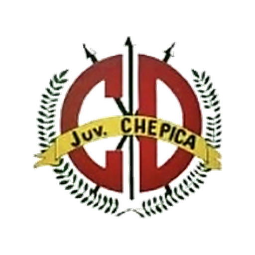
Juventud de Chépica
Grupo A
Los 11 clubes participantes de la fase de grupos, con su identidad visual y organización oficial.

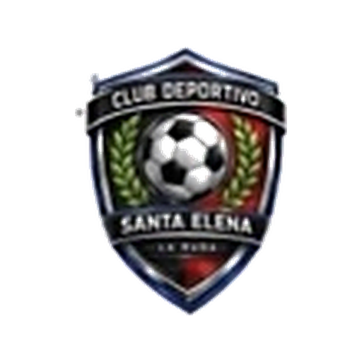
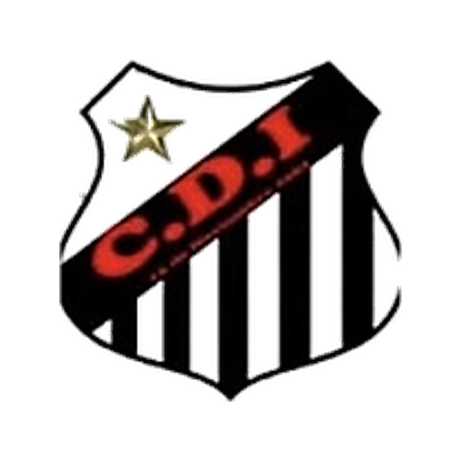
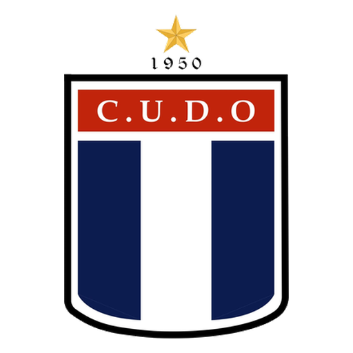
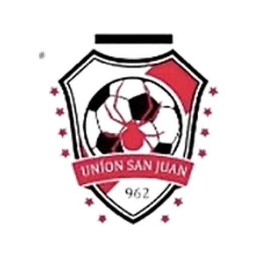
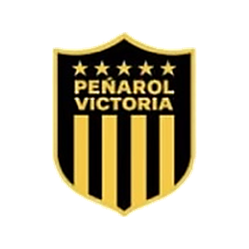
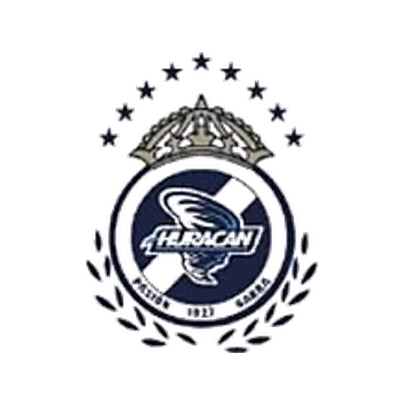
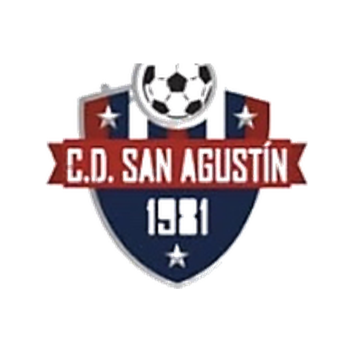
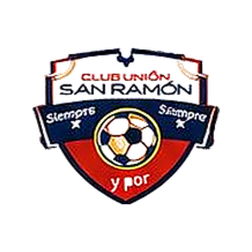
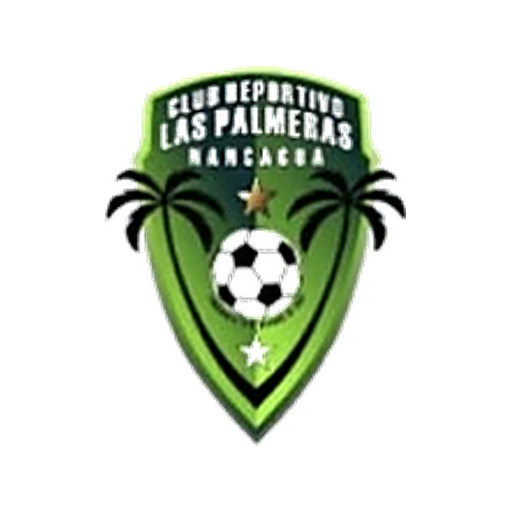
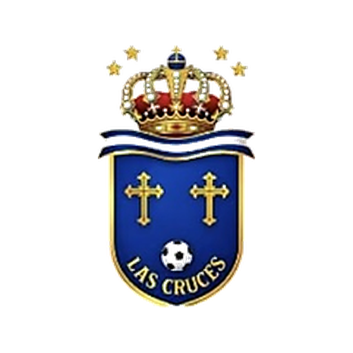
Identidad de clubes basada en las publicaciones oficiales suministradas del Campeonato ANFA Chépica 2026.
ANFA Chépica 2026 · Fase de Grupos.